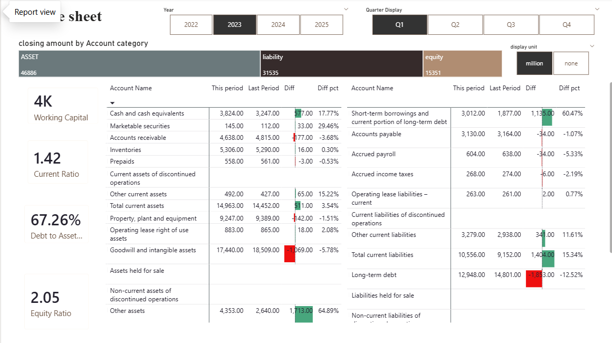
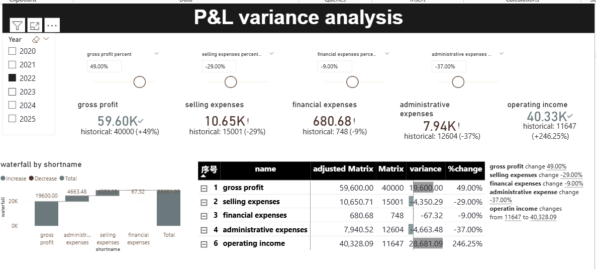

Transforming complex financial data into high-impact business visuals. Focused on automated financial reporting, variance analysis, and interactive decision support using advanced Power BI techniques.

By leveraging Time-Intelligence slicers, this dashboard allows stakeholders to instantly track shifts in Assets, Liabilities, and Equity across different fiscal periods. It replaces static reporting with a dynamic interface for real-time capital structure oversight.
Enables proactive monitoring of critical solvency metrics, including Current Ratio and Debt-to-Asset Ratio, ensuring accurate assessment of the organization's financial health at any given moment.

Utilises Waterfall Chart attribution to bridge the gap between Gross Profit and Operating Income. The interactive design tracks how specific expense fluctuations impact the bottom line, facilitating immediate budget adjustments and forensic cost analysis.
Provides a "What-if" perspective on profitability by quantifying the marginal contribution of individual cost centres (Selling, Admin, Financial), supporting more agile resource allocation.